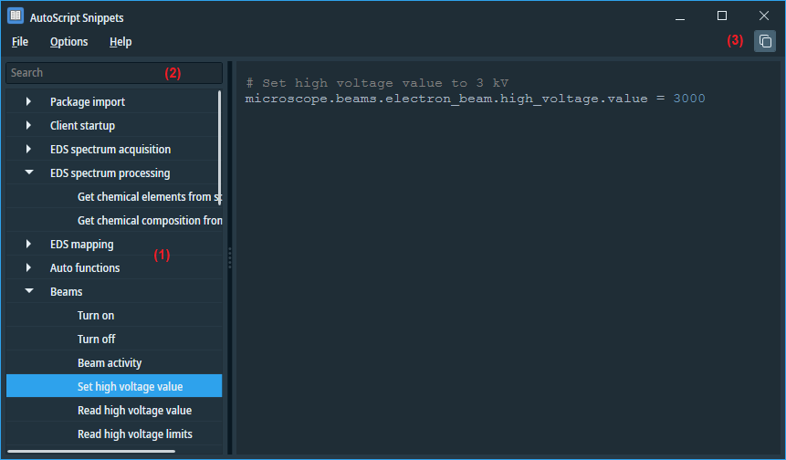

AutoScript Snippets
AutoScript Snippets is a useful browser that provides access to a database of simple Python code samples,
showcasing various AutoScript API calls. One of its notable features is the ability to perform full-text searches,
allowing users to quickly find relevant code snippets based on specific keywords.

In the left pane (1), the code snippets are arranged in a tree structure.
When you enter text in the search box (2), the set of snippets is filtered to show only those that contain
the entered text either in the name of the snippet or anywhere in the code of the snippet.
Use the Copy button (3) to copy the snippet to the clipboard.
Default snippets are stored in a text file at c:\ProgramData\Thermo Scientific AutoScript\CodeSnippets\SdbSnippets.py.
To add custom snippets, you can either edit the file or create a new one. The tool can display snippets from multiple source files
if you use the File/Append Snippets menu function.